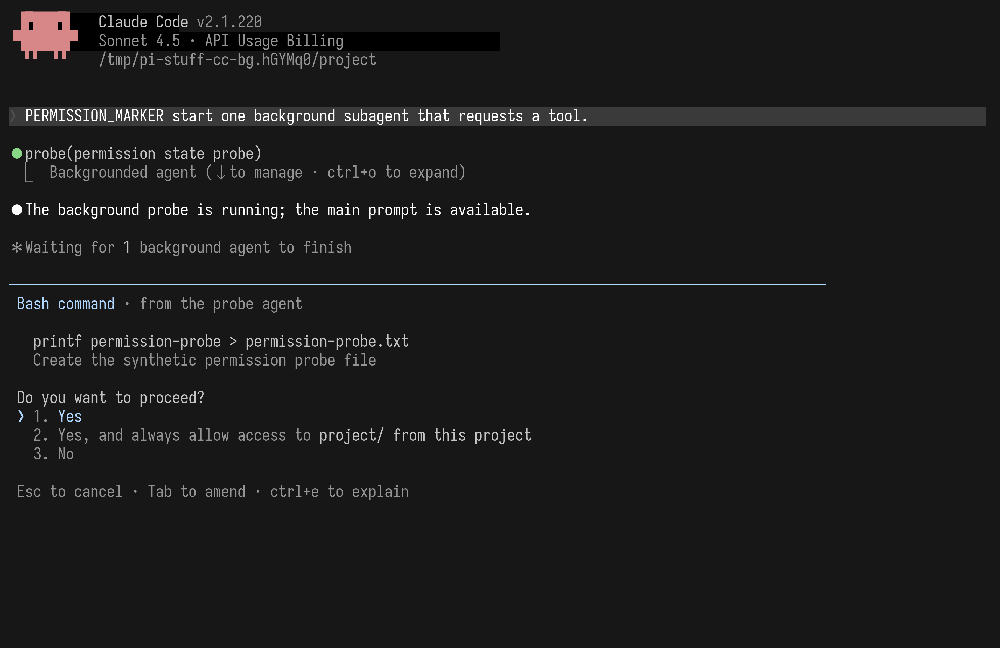
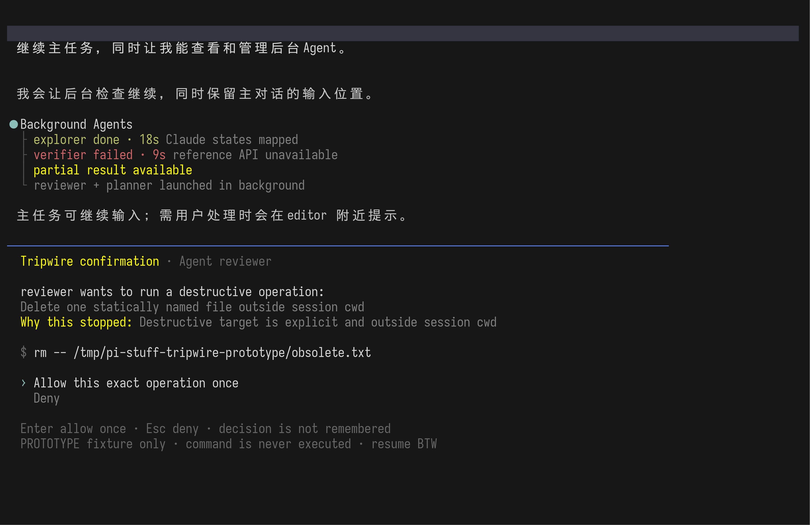
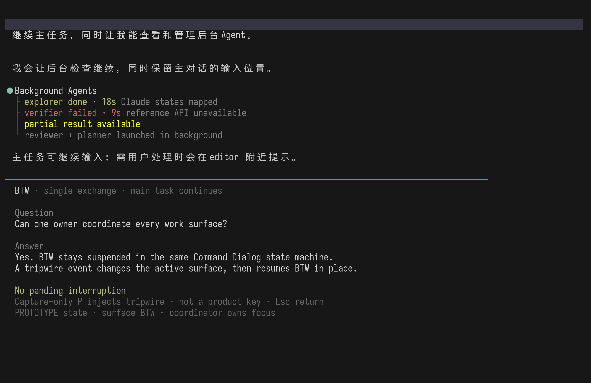
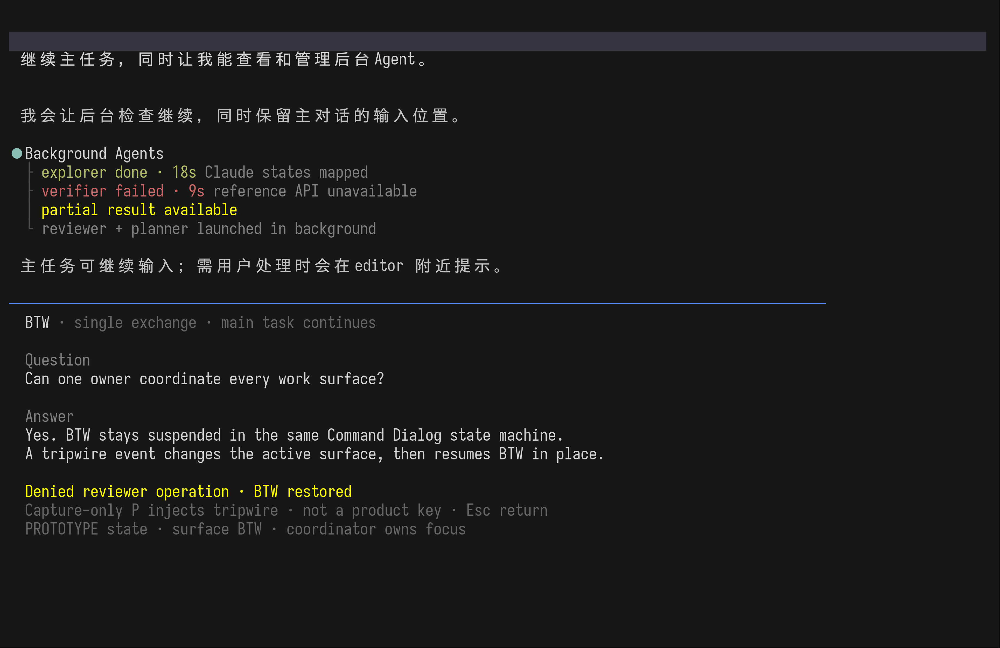
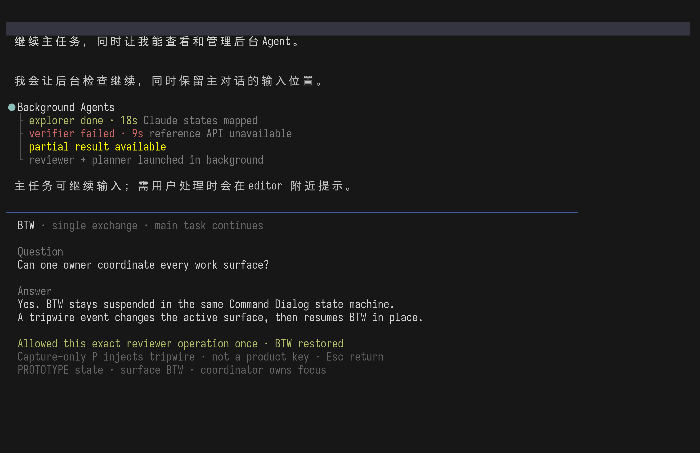
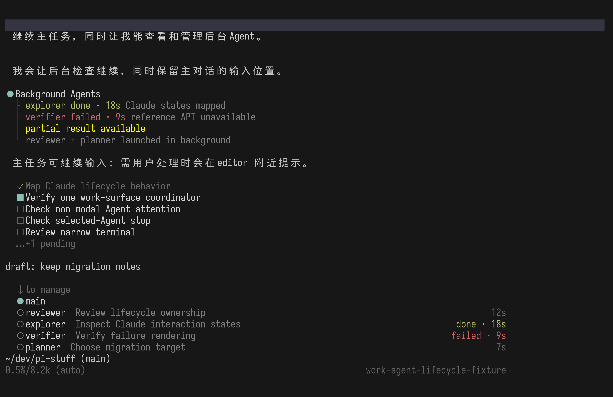
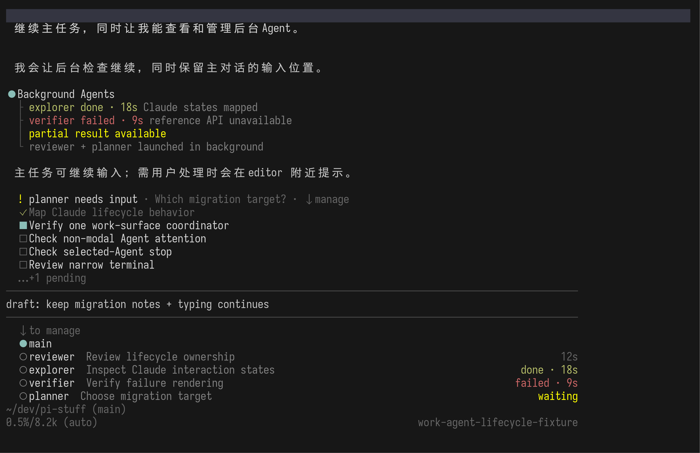
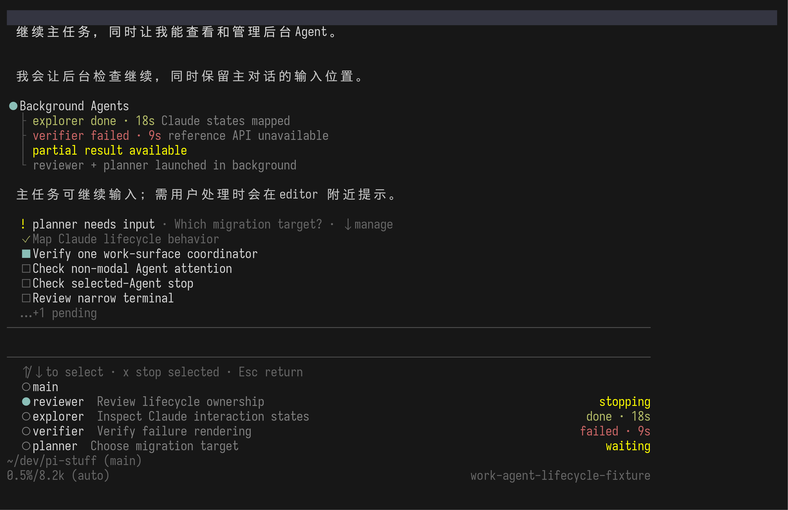
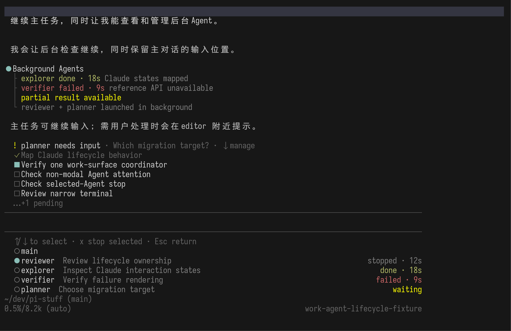
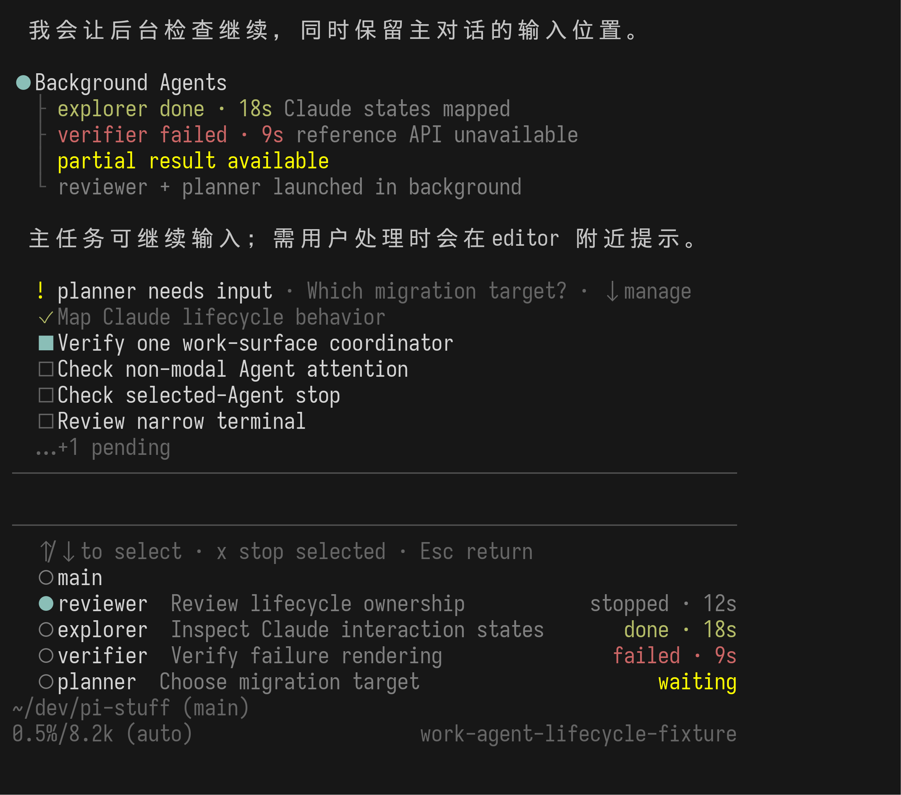

普通结果不抢焦点
完成、失败和停止留在原有分组记录与 roster 状态中；完整结果进入 Agent Command Dialog。失败必须保留最短原因与 partial-result 提示。
这不是另一轮风格选择。它验证一个受 Claude Code 启发、但更窄的 Pi Stuff 规则：普通工作不询问；一个目标静态明确、位于 session cwd 外的破坏性操作才接管输入，只能精确允许一次或拒绝，处理后准确恢复。
同一事实不应同时塞进 transcript、Todo、roster 和 statusline。三个位置分别回答“发生了什么”“谁还在工作”“我现在要控制什么”。
完成、失败和停止留在原有分组记录与 roster 状态中；完整结果进入 Agent Command Dialog。失败必须保留最短原因与 partial-result 提示。
界面明确写出哪个 Agent、具体命令和触发原因。只能允许这一个精确操作一次，或用 Esc 拒绝；不提供 session 或持久授权。
子 Agent 的内部提问先交给 main Agent 自动回答。只有 main 判断必须由人回答，才出现持续 attention row；它不吞掉你正在输入的文字。
真实发布版把正在运行的 Agent、主会话说明与权限选择放在同一个终端流中。没有居中的弹窗；权限区域临时取得输入控制。实际 Esc 实验确认：工具调用被拒绝，但后台 Agent 继续并最终完成。它显示的项目级持久允许是 Claude 自己的选择，Pi Stuff 的防呆线不继承该选项。


这正是统一协调器存在的原因。BTW、Agents、Tool Details 和 Settings 不能各自维护互不知情的 dialog。高优先级事件在同一个状态机里暂停低优先级内容，因此恢复不依赖私有 Pi API。




这里的 needs input 已经过 main Agent 判断，确实只能由用户决定。它持续显示在 Todo 之前，并把对应 roster 行标为 waiting；但 editor 仍拥有按键。内部 contact_supervisor → reply 不自动升级为这条用户提醒。




原型证明的是 UI ownership：一个 Pi Stuff coordinator 可以通过公共 setEditorComponent、widgets、footer 和非 overlay custom() 组合完成焦点与恢复。它没有证明任意第三方 dialog 可被抢占，没有执行画面中的命令，也没有证明所有等价破坏写法都能被识别。
CustomEditor。rm -- /tmp/pi-stuff-tripwire-prototype/obsolete.txt，其目标静态明确且位于 session cwd 外。界面没有“本 session 允许”或持久授权。无法解析的破坏性目标应直接退回 Agent 改写，而不是让用户批准含糊范围。具体首版命令范围、旁路与平台行为仍需独立的对抗测试；该机制不是 sandbox。从仓库根目录运行 FREEZE_BIN=/tmp/pi-proto-bin/freeze ./docs/prototypes/tui/work-agent-lifecycle-spike-capture.sh。状态机在 work-agent-lifecycle-machine.ts，原生 Extension 在 work-agent-lifecycle-spike.ts，session fixture 在 work-agent-lifecycle-spike-fixture.ts。Claude 与产品结论见 研究记录；当前官方依据为 Claude Code subagents、Agent View 与 terminal notifications。